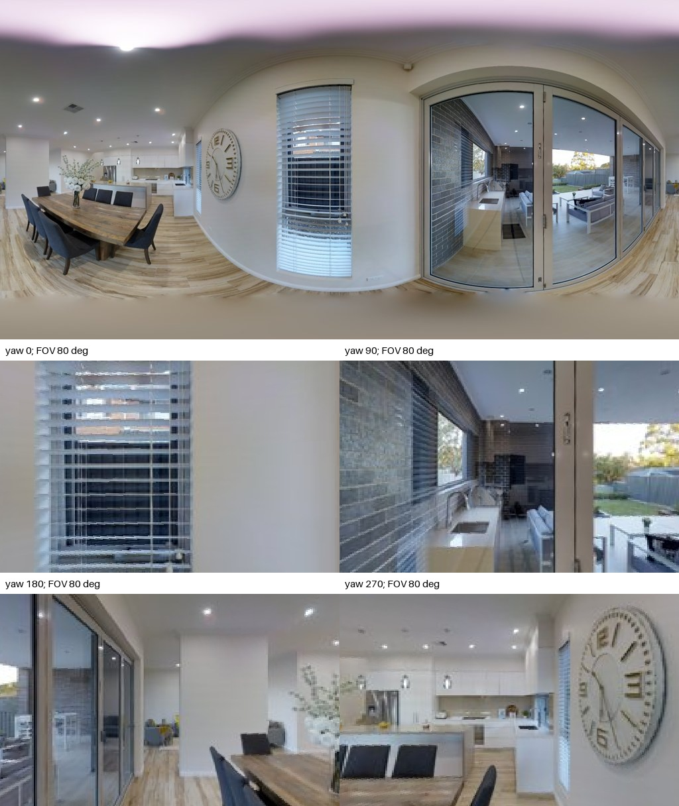
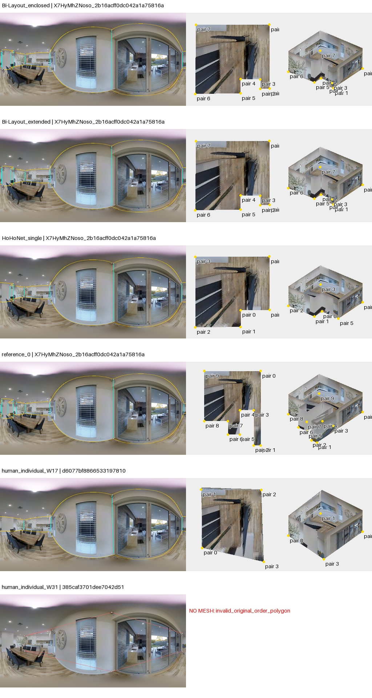
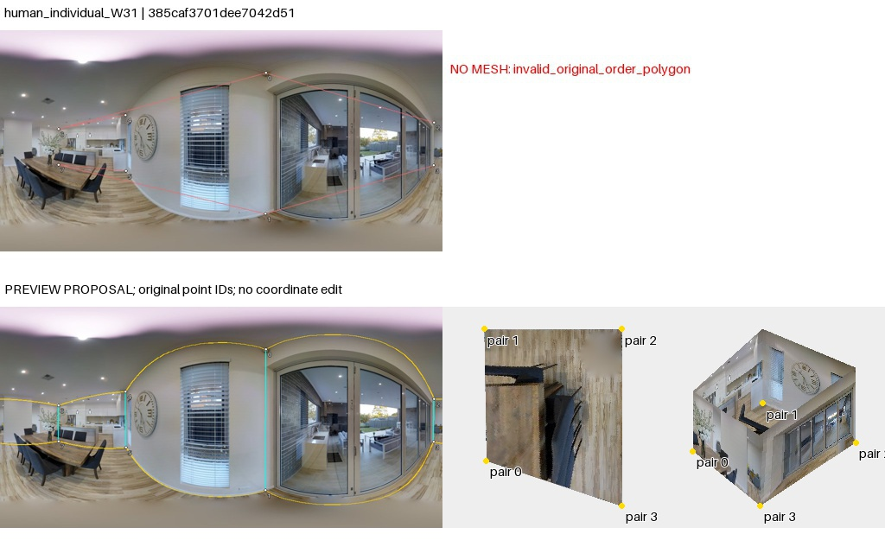

点序复查：旧失败图红线为脚本直连诊断，不是作者墙边证据。导出列表不等于已核实的邻接；重排仅是假设。50图核查与勘误
X7HyMhZNoso_2b16acff0dc042a1a75816a1fbd0a302
AI建议；人工最终判断为空。先看原图，再展开布局。图中3D采用单位相机高度、单全景回投影；不是扫描真值。
原始PNG · 2048×1024；点击图片查看原尺寸。下面的旧拼图仅作概览。

开放餐厨与玻璃滑门外的有顶露台相邻。餐桌、橱柜遮挡部分地墙边界；玻璃后景不能直接当当前室内边界。左/右接缝为同一开放区。需检查是否跨玻璃门扩展或包含厨房。
左窗原始几何，右窗为工具的约束拟合诊断；拟合结果不等于正确标注。无法读取的点组保留失败。高清显示升级未重新裁定旧观察。

Bi两头在本图相同，但餐厨范围内细分角点与参考、W17有差别；W17用较简矩形，W31原邻接自交无法成面。玻璃门作为边界与左侧开放餐厨范围需分开审查。
待人工判断：餐厨内部墙面转折是否应保留；W31点序是否为序列问题？
05_human_individual_W31：visual_candidate_pending_human；高清图中玻璃门框把近侧餐厨与外侧有顶露台分开，左侧厨房还有遮挡。W31的四组点位可保留；按导出顺序作墙边会自交，重排四组能构成近侧四边形，但会省略左侧凹角，不能由网格规整证明这是W31意图。保留重排为可比较候选，原序和纯点图并列；不确认任何一份为正确答案。
